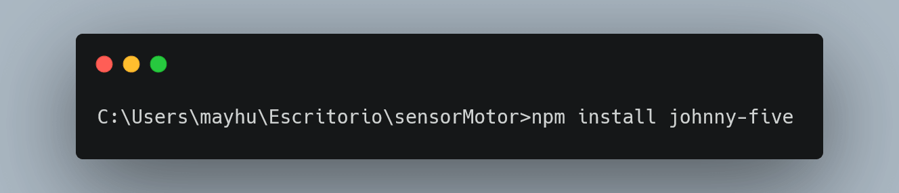

Código con Node.js, Javascript y Johnny-five
En esta parte del proyecto vamos a utilizar Node.js, JavaScript y una libreria open source que nos permite usar arduino con JavaScript llamada Johnny-Five.Empezemos, por usar JavaScript, para hacerlo solo necesitamos un editor de códigos para poder configurar y empezar y programar, pueden utilizar notepad++, sublime Text, en este proyecto usaremos Visual Studio Code. Pero si son de los que les gusta el proceso largo y duro, deber铆an usar notepad (Bloc de notas)...
1. Primero comenzemos a instalar node.js, la cual es tener a JavaScript fuera del Navegador. Asi que dirigete a este link: https://nodejs.org/en/ y descarga la versión LTS de node.js ya que es la más estable. Después ejecutan el archivo y lo instalan. Ahora bien deben dirigirse a su consola de comandos cmd.exe y escriben node -v esto les mostrará la versión de node.js, y les asegurará que ya esta instalado.
2. Segundo vamos a instalar un Gestor de paquetes de node.js llamado npm (node package manager), con este gestor podemos instalar librerias, framesworks y muchas cosas más para JavaScript, en este caso instalaremos Johnny Five.. Para ello debemos ir a nuestra consola de comandos, y escribir lo siguiente: "npm install npm@latest -g", con ello se instalara de manera global.
3. Tercero vamos a instalar express que nos permitirá usar todo el poder de node.js.
4. Cuarto vamos a instalar la libreria open-source llamada Johnny-Five para poder conectarnos con el hardware de Arduino. Para ello debemos dirigirnos a nuestra consola de comandos, y movernos hacia la carpeta en donde trabajaremos a continuación les mostraré:
Una vez hecho aquello ya tenemos todo preparado en Javascript, ahora necesitamos descargar e instalar una libreria de Arduino que nos permita poder controlar el hardware desde JavaScript, esta libreria de arduino se llama StandardFirmataPlus para poder acceder a esta libreria necesitas descargar el IDE de Arduino en el siguiente link: https://www.arduino.cc/en/main/software.
Una vez instalado y descargado el IDE de Arduino debes verificar que el IDE de arduino reconoce la placa. Observa la siguiente ruta.

Debes tener en cuenta que en Board debe estar tú placa ya sea Arduino UNO, Leonardo o la que tengas y en el Poart debe estar el puerto configurado de Arduino.
Luego de aquello debes seguir la siguiente ruta que se observa en la imagen y cargar y subir a la placa arduino.

Una vez realizado los pasos anteriores, es hora de hechar código, para ello te recomiendo leer la Documentación de Johnny-five visita el siguiente link: http://johnny-five.io/api/
Acontinuación podrás descargar el código completo, te recomiendo usar Visual Studio Code como editor de código.
Download Image Code Download code JS{kind=link}
Una vez ya tengas el código listo y escrito para probarlo, vamos a usar el siguiente comando en nuestro cmd.exe para correr el código.
Y listo, ya tienes el hardware en Arduino y el código hecho en JavaScript. Lo siguiente es pasar el código hecho en JavaScript a Arduino.